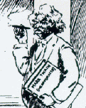
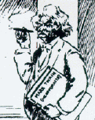
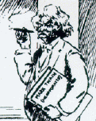

 
Courtesy Kevin Mac Donnell |
MT's preoccupation with what others were saying about his various performances led him to spend a lot of time with scrapbooks. That was how he came to discover a way to improve the scrapbook by making it self-pasting. In 1872 he patented the idea and marketed it as "Mark Twain's Patent Scrapbook." In 1881 he said in a letter to Charles Webster that "the scrapbook gravels me because while [the company producing it has] been paying me about 1800 or 2000 a year, I judge it ought to have been 3 times as much." In any case, this one MT book with no words in it was probably his most lucrative: according to an item in The St. Louis Post-Dispatch (8 June 1885), he had made $200,000 from all his other books, and $50,000 from the scrapbook alone. There is an unused copy of this "text" in the Barrett Collection. Below is one version of the four-page pamphlet MT designed to advertise it. Clicking on the image at left will take you to another advertising pamphlet from Kevin Mac Donnell's exhibit of "MT COLLECTIBLES." |
|
|
